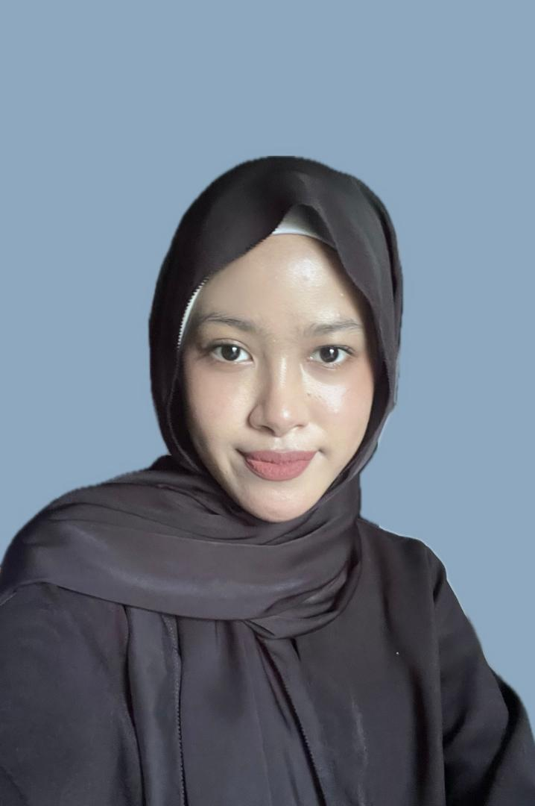

A Picture of me.
| Full Name | Nur-Itqan Khadijah Binti Osny Shu-Harry |
|---|---|
| Date of Birth | 2005-01-08 | Gender | Female | Nationality | Malaysian | Religion | Islam | nuritqanosh@gmail.com | Contact Number | 013-421105 | My Address | Block A, SkyAwani Residence, Bandar Baru Sentul, 51000, Kuala Lumpur | Language | Malay (Native). |
| English (Proficient). | |
| Mandarin (Beginner). | Education Status | Currently studying in UiTM Kedah while pursuing Diploma in Library Informatics and currently in 4th semester. |
| Career Objectives | To enhance my knowledge and skills through continuos learning, and adapting to new challenges to grow into a responsible and capable person. |
| Future Goals | I want to improve myself each day and be highly self-aware to stay humble and grounded. |
| Able to achieve everything i needed even if it takes time but I most likely will be precise and achieve everything i needed with passion. |